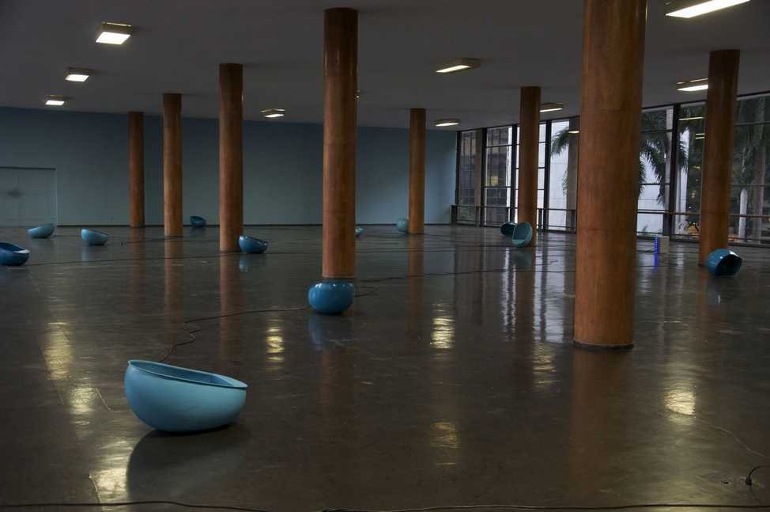

Cidades Sonoras
Registro sonoro em preparação.


Orelhões caídos pelo chão emitem as paisagens sonoras de quinze cidades do mundo. O visitante mergulha em cada uma ao se aproximar.
No Palácio Capanema — marco da arquitetura moderna, uma cidade dentro da cidade — o projeto de Chu Ming Silveira e o edifício se encontram no mesmo declínio: soluções elegantes, cada vez mais obsoletas.
- Materiais
- Orelhões, paisagens sonoras de 15 cidades
- Dimensões
- Dimensões variáveis
- Local
- Galeria Funarte, Palácio Gustavo Capanema, Rio de Janeiro
- Exposição
- A Cidade Sonora (2012)